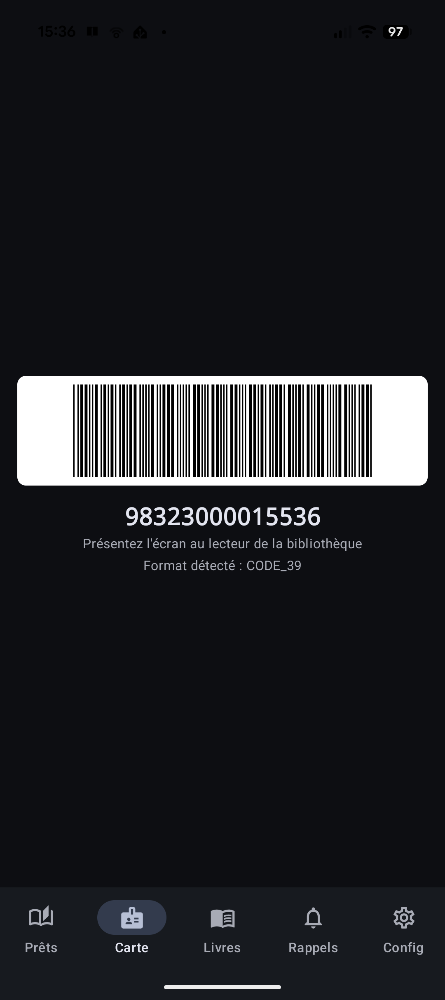
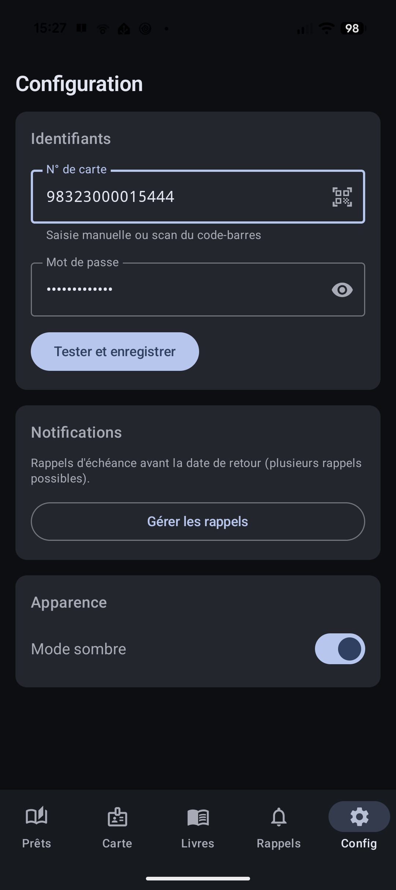

La carte d'adhérent, toujours sur vous
On connaît tous ce moment : la carte est restée à la maison, et pas d'emprunt sans carte. Avec Biblio Cuers, votre carte de membre vit dans votre téléphone.
En pratique
- Une première fois, vous scannez le code-barres de votre carte physique : l'application la mémorise sous forme numérique.
- Ensuite, votre carte digitale s'affiche plein écran avec une luminosité maximale, exactement comme une vraie carte.
- Présentez le téléphone au guichet ou au lecteur de code-barres : le numéro de carte est immédiatement lisible.
Les points forts
- Plus jamais sans carte : votre téléphone suffit.
- Une carte numérique fidèle à l'originale, adaptée au matériel de lecture de la bibliothèque.
- Le numéro de membre est enregistré de manière sécurisée sur votre téléphone.

